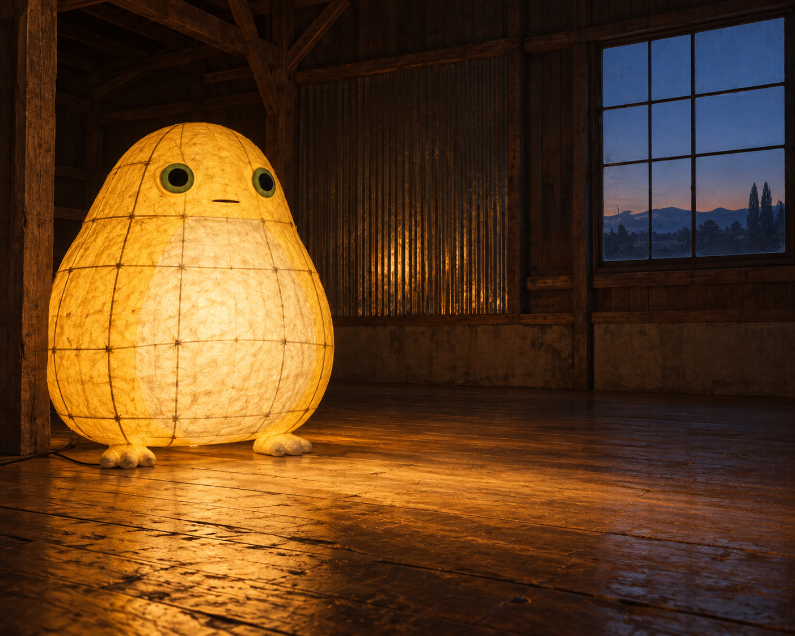
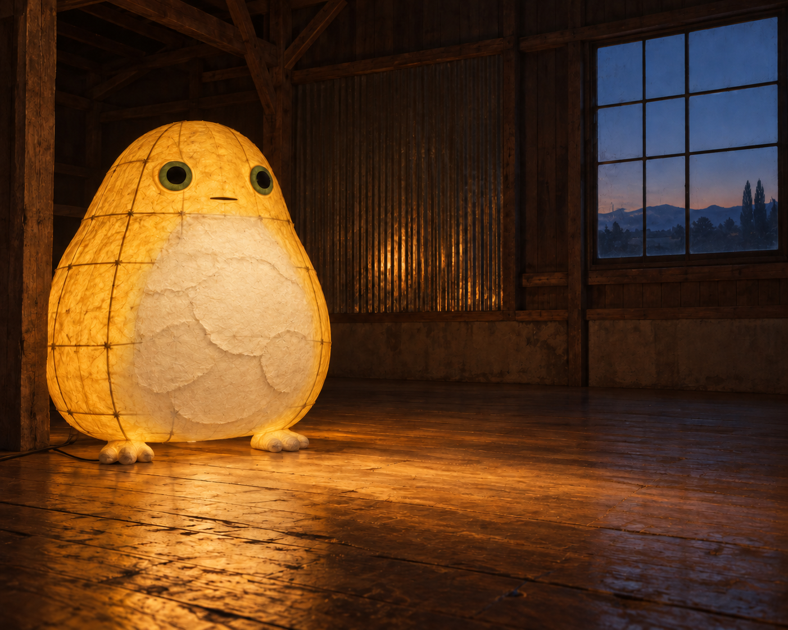
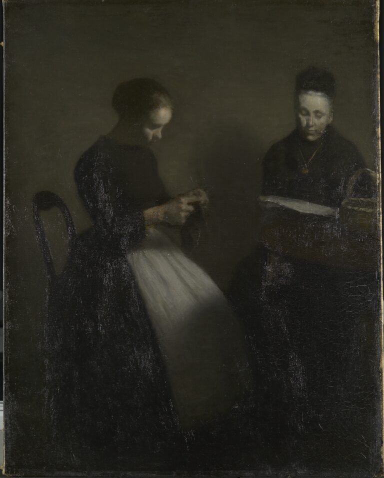
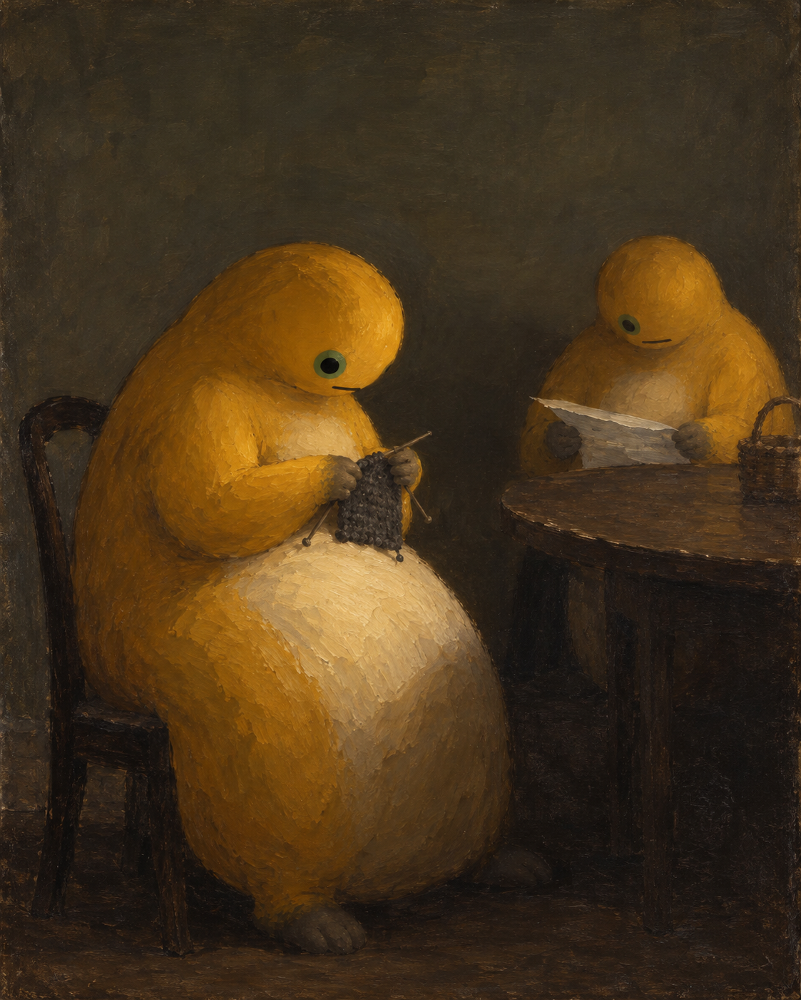
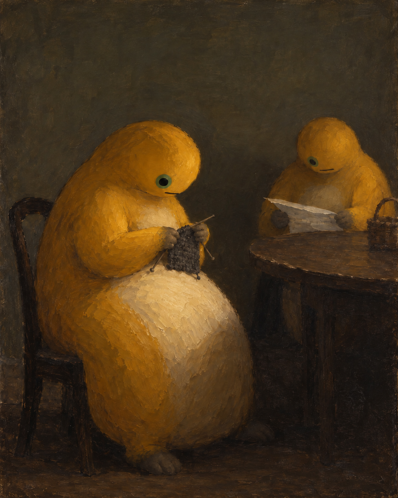
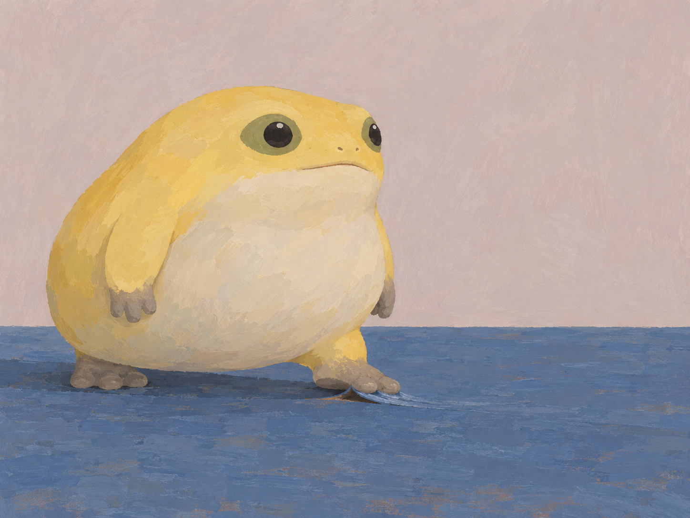
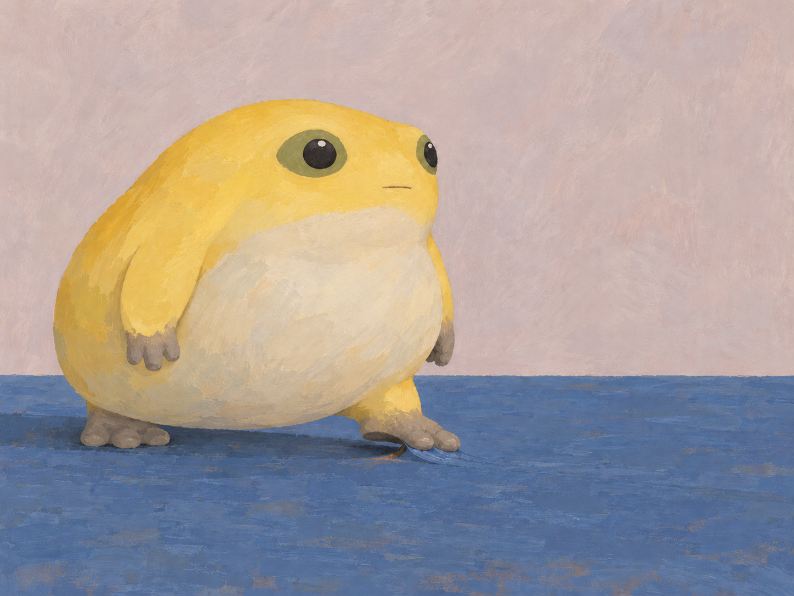

纸厚了，空处仍然亮着
纸层让腹面显出厚度，却没有让地板亮区明显收缩。另一条研究转向两个不发光的身体：压低后方腹面后，纸的亮边更独立，但第三块浅色面仍在，也有全图细小重绘。 足下研究随后转向接触：V2修正了面部并略抬脚跟，前掌黏附仍未明确。
2026年10月14日 · 北京时间21:48:00阶段记录。三条研究线共保留5张生成研究图，其中2张为图像修订结果；另有2张参考图，研究稿均未计入馆藏成品。各节保留当时记录。
本文章节
16:21 · 纸厚了，空处仍然亮着
2026年10月14日 · 北京时间16:21阶段记录
今天回到昨天的纸灯。N3《空房间先亮起来》原先问：“空心的身体能否以光的范围而不是体积占据空间？”纸壳亮着，竹肋从腹面透出来，地板上的暖光一直铺向右边的空处。下一步想看，光弱下来以后，身体和房间会怎样重新分配轻重。

这次只从腹面纸层入手：在同一壳体上增加几层乳米色纸，让中央竹肋隐去，尽量留下头肩与两侧的亮度，也留下旧木地板的不均匀反光和蓝色暮窗。我想知道，腹部不再那么通透以后，厚度能否重新被看见；侧缘剩下的光，还够不够把它连到空位。

厚度确实出现了。纸片的毛边沿着凸面搭叠，接缝下有浅阴影，腹部从透亮的内里变成一块较哑的表面。缩小看，乳米色腹面和发光的黄肩侧也能分开。但几块纸的边缘太醒目，容易先被读成装饰补丁；材料的变化比身体与房间的关系更抢眼。
右边的光没有明显退回去。地板仍亮着，空位也还在那里。这张图没有让我更清楚地感到房间变远、身体变重，或两者的联系被削弱。原图的通透腹面与地板光较容易连成一片，新版则先把目光留在纸片上。材质研究有了可见结果，空间上的牵动还弱。
我保留这一张，没有再把整幅画压暗来补出想要的结论。原图的纸壳本来连续，也没有可见破洞；这次增加的是腹面纸层。这次实际生成一张研究图，没有继续修订。
下一张若继续，先问一个更小的问题：只留一条窄而连续的未覆纸区穿过腹面，能不能让光被看成同一纸壳的内部延续？它也可能立刻变成一条装饰纹。这个问题尚未生成。
本节以N3旧图和一张新研究稿作对照；新稿尚未作为独立馆藏作品采用。两图均为AI辅助二维概念图，纸、竹肋与照明是画面中的材料和光感，未制作实物，也未做严格的物理照明实验。材料与光的研究背景参阅野口勇博物馆《History of Akari Light Sculptures》。本项目为社区奶蛙的非官方二创，不表示艺术家或角色权利方参与或认可。
本节来源：[1]
17:42 · 白色没有连起来
此前的纸灯研究没有让地板光域明显收缩。这一次，我把问题转到两个不发光的身体：在同一片暗调里，圆腹与薄纸能不能各自接住光，又保留彼此之间的距离？
原作是哈默修伊1891年的《夜晚室内·人造光：伊达与弗雷德里克·哈默修伊》（Ida and Frederikke Hammershøi）。近侧人物的围裙和后侧人物手中的报纸形成两处亮面。我保留不对称的双人位置和各自低头的活动，把围裙改成奶蛙本身的奶油色曲腹，让身体形状重新参与构图。


新图里，近处的腹面沿凸起慢慢转暗，后面的纸边则薄而平。两者中间的暗隙在缩图里还看得见。椅背、桌沿和各自的手中动作，使它们像在同一个房间里各做各的事。
结果也偏离了原先的设想。近处身体明显过大，笔触比计划更厚；后方腹面多出一片亮色，画面并不只有两处白。针端偏多，手部编织关系仍不够清楚。共处感更多来自动作和遮挡，材料差异没有独自承担这种关系。
这一版保留为研究稿，没有继续生成修订。下一步的问题是：如果只压低后方腹面的亮度，留下纸的亮度和原有位置，两处亮面的关系会不会更清楚？它也可能损失后方身体的体积，这一步尚未尝试。
19:01 · 后腹的亮度退后一步
上一张《白色没有连起来》留下一个具体问题：后方角色的奶油腹面在纸上方形成第三片亮色，分散了前腹与薄纸的关系。这次只做了一次编辑，尝试压低那块腹面的明度，保留纸和原有构图。

结果里，后腹成为较暗的灰赭，纸的薄亮边更独立。腹面中央到边缘仍有转折，后体没有明显被压成平板；但奶油色身份减弱了，体积也更依赖肩部、轮廓和桌沿遮挡。
第三块浅色面仍然可辨，所以只能说主次清楚了一些，不能说严格只剩两处白。编辑还连带重绘了前腹、纸面和背景的细小笔触，画幅也微变。这不是其他条件逐像素不变的实验。
保留这一版与前版对照，不继续补图，也不把它算作新的独立成品。下一问题是：不再继续压暗后腹，只收窄浅色面积，能否让体积和亮面层级同时保留？这一步尚未执行。
21:09 · 足下翘起了，黏附还没成立
2026年10月14日 · 北京时间21:09:09阶段记录
前两次研究改了纸的厚度和腹面的亮度，空间关系却没有跟着明显变化。这一次，我把问题移到接触处：一只脚开始离开地面时，能不能让脚跟先分开、前掌仍贴着，让一小片地表被带起？
新图有了局部的蓝色翘边。左足落地，身体没有悬空；右足下方有薄边和暗隙，周围仍然平着。但这段关系更像脚踩在一片已经翘起的边上。脚跟与前掌没有清楚分成“已经离开”和“仍然黏着”两处。缩小看，先见到的仍是一只站着的角色，足下的小蓝边不足以说明接触正在结束。
角色本身也偏了。脸上出现两个鼻点，嘴变宽，奶油色连到下颌，开始像普通青蛙。这些变化使它没有保持住原定的奶蛙形象。颜色和圆腹相似，不能抵消这个问题。

这一张保留为没有达题的研究稿，不再追加图像。若以后继续，需要先守住角色；接触处则留下一个问题：前掌稍微抬高、蓝层仍贴着足底，能不能使它更像带起地表，而不是踩到翘边？目前还没有做。
本节为原创构图的AI辅助二维研究。蓝色涂层和黏附是画面设想，没有制作实物或验证材料性能；单张图也不能证明真实动作或角色心理。
21:48 · 脚跟松开了一点，前掌仍没说清
《脚底还粘着一点》的第二版继续问同一件事：一只短足的后半段已经离开地面，前半段还贴着被带起的蓝色薄层，能否在一张画里同时看清？
这次把后跟抬高一点，并尝试收回向右伸出的薄边。原图里，脚跟下面的空隙比第一版清楚了；前掌下也仍有小块蓝层和露出的赭色底面。但缩到320像素宽时，画面先让人看见的依然是站姿和足前的一道蓝边。“踩着一处小翘边”仍然是容易产生的读法。
所以，这一版只算局部改善。后跟与地面的分离稍明确，前掌仍黏着的关系却没有同样明确。还不能说接触问题解决了。
同时修正了第一版的角色偏差：去掉鼻点，缩短嘴，恢复黄色下脸，让奶油腹不再直接成为嘴下的大下颌。这是另一项改动，不能把脸更像了当成材料关系更成功，也不能把两版叫作严格的单变量比较。细部笔触也随编辑发生了变化。
两版都保留为研究稿，不作为馆藏成品。下一道尚未解开的难题，是如何在全身与短足的尺度里，让两处不同的空隙在小图中仍然可分辨，又不把地面夸张成一张被掀起的薄片。

来源与阅读
- 野口勇博物馆《History of Akari Light Sculptures》 ↗
材料与光的研究背景；N3两图为AI辅助二维概念图，未制作实物或实测照明。
资料核对日期：2026-10-14 - SMK作品页：Evening Interior. Artificial Light. Ida and Frederikke Hammershøi ↗
1891，布面油画，63 × 50.5 cm，SMK – National Gallery of Denmark。原作图像与AI改编研究分别标注。
资料核对日期：2026-10-14 - SMK图像使用说明 ↗
Public Domain标记仅适用于SMK原画摄影复制图，不扩展到本项目AI研究图。
资料核对日期：2026-10-14